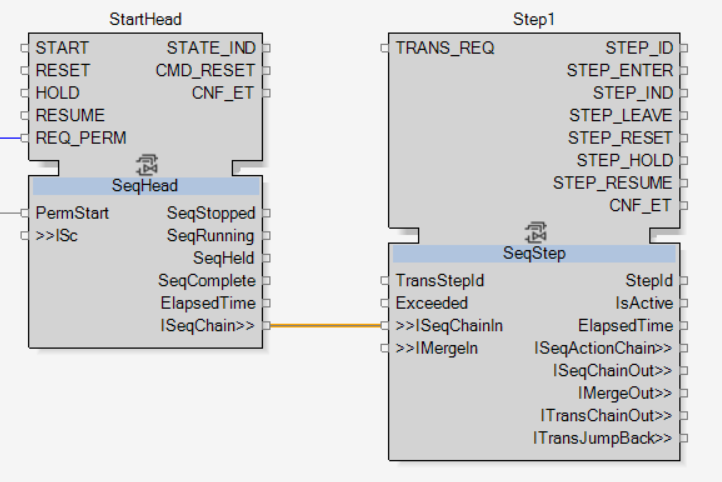
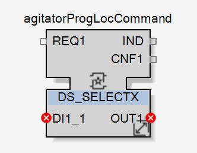
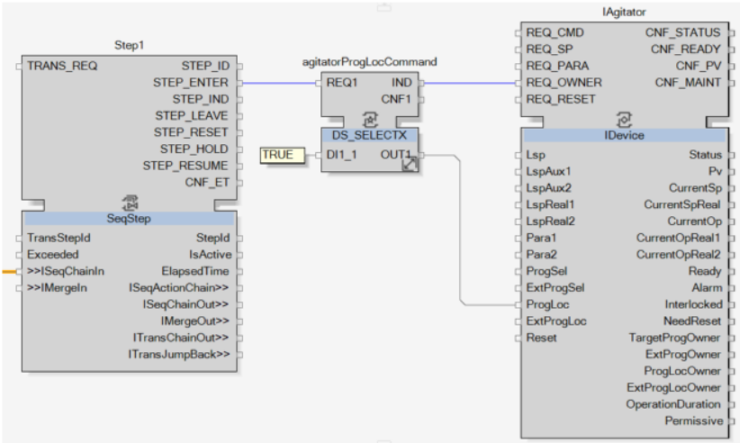
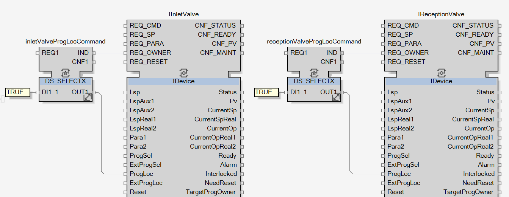
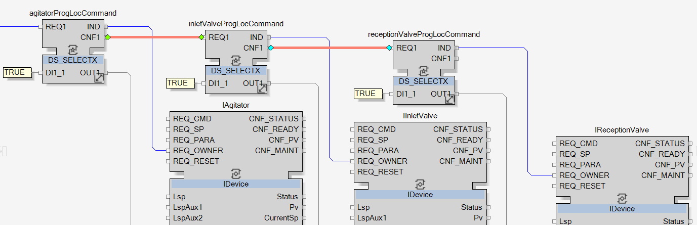
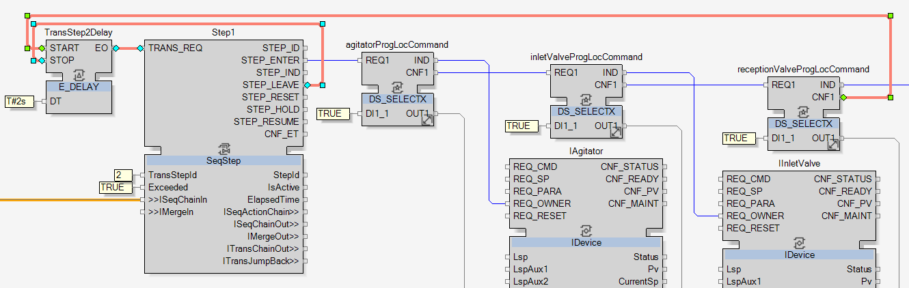

Taking the Ownership Step
Here will be developed the actions aiming to take the ownership of the instruments as defined in the topic Filling Sequence Definition.
As seen in the topic SeqStep Function Block, a SeqStep function block is required to control the step:
-
Add a SeqStep function block and name it Step1.
-
Link StartHead.ISeqChain to Step1.ISeqChainIn to create the chain between the SeqHead and the SeqStep.
|
 |
The action of this step is to take the ownership of the instruments so they can be controlled during the sequence, as defined in the topic Filling Sequence Definition.
It has to be done as soon as the step is entered, which means that STEP_ENTER output event will be used to transmit the signal to the instruments.
For the sequence to take the ownership of an instrument, a request has to be sent to the IDevice adapter of the instrument. This request is done by sending the value TRUE to ProgLoc variable and firing the event REQ_OWNER.
-
Add a DS_SELECTX function block and name it agitatorProgLocCommand.


NOTE: This function block sends the value of its input variable to its output variable when its related REQ1 event is triggered.
-
As done in the topic Processing Analog Input Value with LevelCompare, change in the Generic Interface Editor dialog box the type of DI1_1 from ANY to BOOL.
-
Again, as done in the topic Processing Analog Input Value with LevelCompare, add the constant TRUE to DI1_1.
-
Link Step1.STEP_ENTER to agitatorProgLocCommand.REQ1.
-
Link agitatorProgLocCommand.IND to IAgitator.REQ_OWNER and link agitatorProgLocCommand.OUT1 to IAgitator.ProgLoc.


|
As programmed, when Step1 is entered, then the command to take the ownership of the agitator will be correctly sent. |
Now, the same actions have to be done for the other instruments TR1V01 and TR1V02:
-
Add two other DS_SELECTX function blocks and name them inletValveProgLocCommand and receptionValveProgLocCommand.
-
Configure the variable type to BOOL and add a TRUE constant to DI1_1 like done for agitatorProgLocCommand.
NOTE: If these function blocks are added with one of the two methods detailed in the topic Opening the Second Valve, then this second step will be done automatically. The set up of a function block is retained when it is duplicated.
-
Link inletValveProgLocCommand.IND to IInletValve.REQ_OWNER and inletValveProgLocCommand.OUT1 to IInletValve.ProgLoc to take the ownership of the valve TR1V01.
-
Link receptionValveProgLocCommand.IND to IReceptionValve.REQ_OWNER and receptionValveProgLocCommand.OUT1 to IReceptionValve.ProgLoc to take the ownership of the valve TR1V02.

For the REQ1 input event of these two function blocks to be triggered, two methods are available:
-
Method 1: Linking the function blocks in parallel.
Link each of the REQ1 of the function block to Step1.STEP_ENTER. Then all the actions will be triggered at the same time.
-
Method 2: Linking the function blocks in series.
Link the REQ1 of the second function block to the CNF1 of the first one and the REQ1 of the third function block to the CNF1 of the second function block. Like this, each DS_SELECTX function block is triggering the next one once itself is done.

|
In this application, the second method is chosen because it creates an official queue of actions. Doing the actions in parallel is actually not triggering the actions at the same time, a random queue of execution will be created to execute them after one another. At the end, both methods are using a chain of actions but with method 2, the order of execution is defined and known. |
Following this second method, link agitatorProgLocCommand.CNF1 to inletValveProgLocCommand.REQ1 and inletValveProgLocCommand.CNF1 to receptionValveProgLocCommand.REQ1.

|
|
NOTE:
The links in the image above are orange because they are selected, they are not adapters. They are selected to highlight the links added in this step. |
|
|
The actions to take ownership step are now done. To complete this first step, its transition condition has to be developed. |
As defined in the topic Filling Sequence Definition, the transition condition of this first step is to wait 2 seconds once the last action of the step is done:
-
Add a E_DELAY function block and name it TransStep2Delay.
-
Link receptionValveProgLocCommand.CNF1 to TransStep2Delay.Start.
NOTE: With the method 2 chosen, it is easy to know which action is the last one to start the time from it. With the method 1, it wouldn’t have been possible to know which one is the last one.
-
Link TransStep2Delay.EO to Step1.TRANS_REQ, so the transition request is triggered when the 2 seconds of the timer is elapsed.
-
Link Step1.STEP_LEAVE to TransStep2Delay.STOP, so the timer is stopped when the step is left.
-
Add the constant T#2s to TransStep2Delay.DT.
-
Add the constant TRUE to Step1.Exceeded, then the condition is always true, the trigger after 2 seconds is enough to move to the next step.
-
Add the constant 2 to Step1.TransStepId to define which step the sequence will activate after leaving this one.

|
|
The development of the first step is now completed.
Cross reference the links between the DS_SELECTX function blocks and the IDEVICE adapters and move to the next step. |